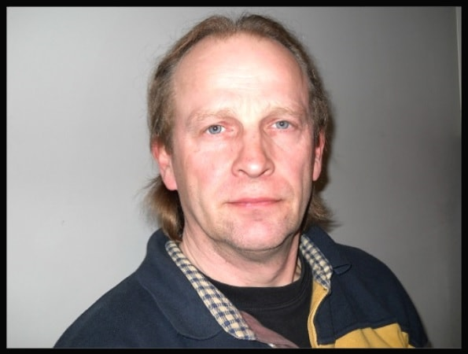

De zaakvoerder
Monne Baksteen is de zaakvoerder van S.T.A.R.S.II. Hij heeft vroeger elektronica gestudeerd en is daarna informatica gaan studeren in een avondschool. Na zijn studies is hij eerst 1 jaar lang computers gaan herstellen, daarna heeft hij 10 jaar bij Prodata gewerkt aan het assemblage proces voor computers die gebruikt werden als betaalterminals voor treinstations. Ten slotte heeft hij ook nog 13 jaar bij de KBC in de IT sector gewerkt. Kortom heeft Monne Baksteen kennis over de sector verkregen door uren achter de boeken te besteden en heeft hij jarenlange ervaring in het vakgebied, deze kennis en ervaring heeft hij dan ook gebruikt om zijn bedrijf S.T.A.R.S.II op te richten. Ondertussen is Baksteen al 20 jaar bezig met zijn zaak en probeert hij zijn concurrentie steeds weer een stap voor te zijn door zijn bedrijf te laten groeien en zijn aanbod te vergroten. Je kan er bijvoorbeeld niet alleen terecht voor hulp met het plaatsen van satellietantennes, maar ondertussen ook voor witgoed en allerlei andere producten.
